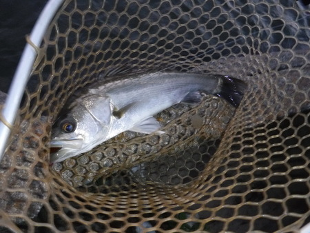
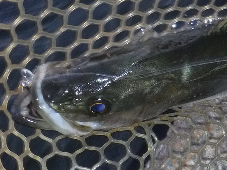

釣行日誌 故郷編
2023/10/17 会心のストライク
週末、所用で出撃出来なかったので、昨日・今日と連日の登板。
ネットで満潮時刻と日の入り時刻を確かめ、少し早めに出掛けた。
まだ明るいうちに、対岸のブロックの隙間を通すと、ブルッと当たってすぐ外れた。『あれ？』と思って見てみると、ブロックに当たったはずみでラインがフックに絡まっていた。これじゃぁ掛からないわなァと、少し間を置いて再度同じポイントへ。
「ぐぐっ！」
大きい！と思うまもなく数度のエラ洗い。しかし、何とか水中でやりとりし、明るいのも幸いして、無事取り込みに成功。
自己最大、45cm であった。（目測） あとは 20cm 級を数匹。

自己最大、45cm
やっぱり大潮で、満ちてくる時間帯＋夕まづめ か！ と納得した。
しかし、中国通販のフローティングミノー、侮り難し。

フローティングミノーを丸飲み。
まァ、好きで、そればかり使っているから「当たりルアー」になるということもあるのだろうけど。しかし、泳ぎとフックの質は見事である。
2024/01/30
釣行日誌 故郷編 目次へ
サイトマップ
ホームへ
お問い合わせ